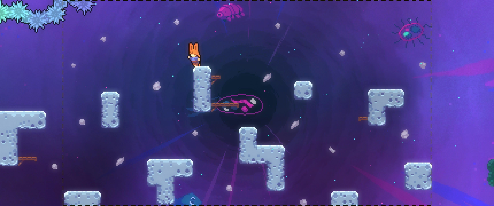
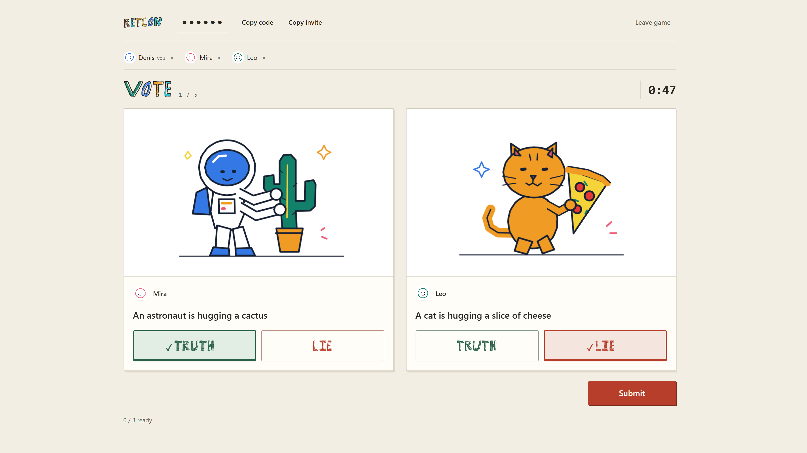

Projects


Other projects
Celeste Gameplay Viewer
Interactive level-inspection tool for AI-assisted Celeste mapping.
Twine game
A Twine murder mystery where evidence and camera footage unlock new questions across four suspects.
Unity platformer
A 2D Unity platformer with physics-based movement, hazard respawning, animated movement states, and a smooth-follow camera.